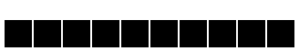
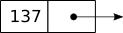

This is the first article in a multi-part series on the stack data structure. This series defines what a stack is and what it does, then implement a link-based stack
What is a Stack?
A stack is a data structure that holds data in LIFO order. This means that whatever was the most recent "thing" to be put onto the stack will be the first to be removed.
For example, imagine that you are washing a stack of dirty dishes. As you're washing, every time you clean one plate you pull another off the top of the stack of dirty dishes. If someone wants to give you more dishes to wash they're going to put them on top of your stack.
That's pretty much what the stack data structure is. It's an ordered collection of things (with the most recently added thing at the top) and you can perform certain operations on it. You can
- see if the stack is empty
- see how many things are in it
- take an item off of the top (pop!)
- add something to the top (push!)
- see what the item at the top is (peek!)
We can reword the above list into pseudocode that will make our lives easier when we start writing some code (it's usually a good idea to put your ideas into pseudocode before writing actual code).
(new Stack()).isEmpty() = True(new Stack()).pop() = False(new Stack()).peek() = error(a_stack.push(item)).isEmpty() = False(a_stack.push(item)).peek() = item(a_stack.push(item)).pop() = True
In order, this is what they mean
- A new stack should be empty
- You can't take something off the top of an empty stack
- Trying to see what's at the top of an empty stack results in an error
- A stack with something in it isn't empty
- Looking (peeking) at the top gives you the thing that was most recently added
- You can remove something from a non-empty stack
This may sound somewhat similar to an array. It is, and a stack can be implemented using an array. But, elements in an array can be accessed at will while elements in a stack are accessed in LIFO order.
Some Applications of Stacks
But, what's the point? Why would we want to have a data structure that remembers which dish we need to wash next? Stacks are actually pretty useful and common in computing.
Remember, they keep track of a sequence of elements with the most recent element at the beginning of the stack. So, we can use a stack to keep track of which characters have been entered by a user, keeping track of cities visited when finding a flight path between different cities (backtracking), and computers use them to hold local variables and return addresses for function calls (stack frame).
Implementations of Stacks
There are at least two different ways that we can make a stack: using an array (or a list in Python) or using a chain of nodes (which we'll call a linked stack). Here, we're going with a linked stack.
The Linked Stack
The following discussion is a general discussion about link-based data structures versus array-based data structures. For Python, the overhead of the rest of your code can be so large that the overhead of an array-based vs link-based data structures may not make much of a difference. But, this is still a useful discussion nonetheless.
Think of an array and how every element in an array is stored in contiguous
blocks of memory, such as the example in the figure below. Each cell is a block
of memory and the number above the cell is its address. When you want to
access an element of an array you use an index such as arr[4] to access the
fifth element of the array (assuming zero indexing). This is actually an offset
from the address of the first element in the array. This gives us quick and
direct access to the data. This quick and direct access comes at a cost.

When an array has data added to it and it is, extra memory must be allocated to make room for the data (and then some) and the data must be copied to the new memory location. This is one of the costs of using an array, the time that it takes to allocate more space for the array and copying its data to the newly allocated space. We could preallocate more room for the data ahead of time, but that would be potentially wasted space (this is actually what Python does with lists) and increases the complexity of the data structure.
What about removing data? If we need to remove data at the end of the array then we're fine. But, removing data anywhere else requires us to either remember which elements have been removed (to guard against stale data), or to readjust all the following elements.
If we're going to mostly be reading and updating data, or if we know how much space our stack will need then an array is a good choice to use as the data store for a stack. Otherwise, if we're going to be doing a lot of adding and removing data then we should look into using a linked stack.
A linked stack is made of a set of nodes that are linked together by references, a.k.a the link. Depending on the language, this reference can be a pointer variable (like in C++) or a variable that holds a reference to the next node in the chain (what we're going to do with Python). (The point is that instead of using contiguous memory addresses a linked stack (or linked data structures in general) use memory from wherever the system allocates space for you. This means that, for the most part, linked stacks can be as large as you need them to be.)
So, a node is an object (don't think of the CS idea of an object just yet!)
that holds data and a reference to another node. If there is no other node,
then that reference is None in Python (or, nullptr in C++). In the figure
below, the left side of the node is the data and the right side is a reference
to the next node indicated by an arrow.

A chain of nodes is shown in the figure below. The head consists of a head node
and the nodes following it. The end of the chain is the block all the way to
the right with an "X" in it. This "X" represents a reference to None in
Python (or nullptr in C++) indicating the end of the chain.
{kind=link}
Now, linked data structures aren't perfect and there will be some tradeoffs to using one versus using an array. First, they take more memory because they must contain a reference to the next node in each node in the chain. Second, they do not support random access. You must start with the head of the structure and traverse the chain until you reach the desired entry.
The Stack Interface
We're going to start with defining an interface for the stack then move on to implementing the linked stack in the next article. The point of making an interface is to make sure that we implement the correct methods in our implementation. Now, this may not seem like it's such a big deal right now (after all, we're only implementing on type of stack, right?), but if we wanted to make a different type of stack then we can inherit from this interface and code to the specifications that are laid out in it (see these answers on SE).
Anyways, we're going to use Python's abc module to create an interface that
we'll use later on in our linked stack implementation. By using the
abc.ABC class and the
abc.abstractmethod
decorator, we
can insure that who ever uses our interface implements it to the
specifications by implementing the methods that use the abc.abstractmethod
decorator. If they're not implemented, then a TypeError will be raised when
the class is attempted to be instantiated. You can get the code from a gist
on GitHub.
# interfaces.py
import abc
class StackInterface(abc.ABC):
"""An abstract base class that defines a stack"""
@abc.abstractmethod
def is_empty(self):
"""Determines if the stack is empty
:return True if the stack is empty, False otherwise
"""
pass
@abc.abstractmethod
def peek(self):
"""Returns the top of the stack
:pre The stack isn't empty
:return The entry at the top of the stack
"""
pass
@abc.abstractmethod
def pop(self):
"""Removes the entry from the top of the stack
:post The entry at the top of the stack will be removed, if possible
:return True if removal was successful, False otherwise
"""
pass
@abc.abstractmethod
def push(self, entry):
"""Adds an entry to the top of the stack
:post The entry will be added to the top of the stack, if possible
:return True if addition was successful, False otherwise
"""
pass
An abstract base class (which is what the interface here is) cannot be instantiated, hence the word abstract. Go ahead and try, I did. The result was
TypeError: Can't instantiate abstract class StackInterface with abstract methods is_empty, peek, pop, push
This is good because we've described a stack as a data structure that has these
methods. Any class that subclasses the StackInterface class must
implement these methods and therefore live up to the specification that we
wrote. If these methods haven't been implemented, then the specifications have
not been met and the subclass can't be instantiated. Neat!
Conclusion
In this article we talked about what a stack is, what a linked stack is, and
then we wrote an interface for a stack. In the next
article, we'll start
implementing the linked stack by implementing the push method.
References
- Stack (Abstract Data Type)
- How Are Lists Implemented in CPython?
- Linked Data Structure
- Data Abstraction & Problem Solving with C++: Walls and Mirrors, 6th Edition
- Starting out with C++: From Control Structure Through Objects, 8th Edition
- PyMOTW 3: abc — Abstract Base Classes
- Interfaces - The Most Important Software Engineering Concept